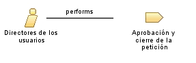

| Role: Directores de los usuarios |
 |
|
Relationships
 |
||
| Primary Performs | ||
|---|---|---|
| Modifies |
|
|
Main Description
| Los Directores de las áreas organizativas y de usuarios afectadas por el proyecto aportan información sobre las necesidades planteadas y validan los resultados con el fin de garantizar la identificación, comprensión e incorporación de todos los requisitos con las prioridades adecuadas. |